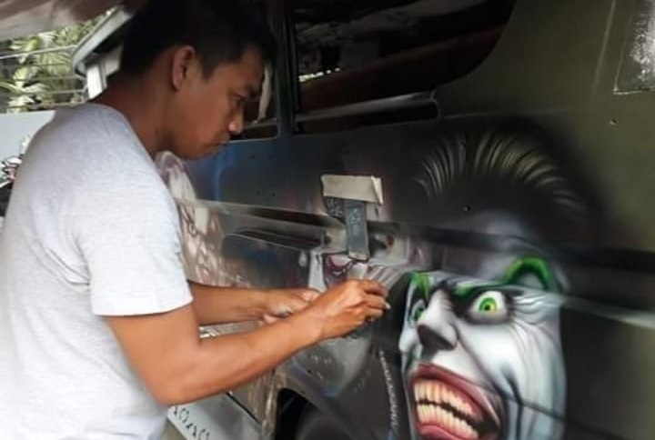

If there were a “national mode of transportation” in the Philippines, it would have to be the jeep. A “cultural specimen” or “national art expression” (Ortega 2002, 83), this public utility vehicle is a common sight throughout the country. But the province of Rizal, east of Metro Manila, has given it a rather unique twist; it developed the patók jeep
While the word “jeep” comes from the first two letters of GPV, which stands for General Purpose Vehicle (Philippine Motor Review 1972, 224), the term “pátok” first appeared in a Spanish-Tagalog dictionary by Pedro Serrano Laktaw. The word, whose stress falls on the first syllable, means “to jump” (Laktaw 1965, 1053).
“Patók,” with the stress on the second syllable, is listed in a 1978 dictionary; it means “sure winner in a horse race” (Santos 1978, 2058).
Airbrushing
Jeepneys are often adorned with vibrant stickers to enhance their appearance. However, patók jeepneys take a different approach, employing acrylic and enamel paints applied with airbrushes. A patók designer notes that while custom-made stickers are more costly and time-consuming to produce, airbrush-painted designs offer a more economical and quicker alternative. This preference allows owners to meet urgent deadlines and reduce production costs.
Decals Design
The vibrant jeepney sun visor decals are a true testament to Filipino creativity and cultural pride. Each design is a kaleidoscope of color and life, often reflecting the diverse stories, beliefs, and dreams of its owner. From religious icons and catchy slogans to intricate patterns and local scenery, these decals transform each jeepney into a moving canvas. Not only do they add a personal touch, but they also serve as a beacon of identity, making every jeepney unmistakable even from afar. These visors aren't just for shade; they're a celebration of individuality and a vibrant expression of the Philippines' rich cultural

Jeepney "lateros," or body repair specialists, play a crucial role in the maintenance and aesthetic upkeep of the iconic jeepneys in the Philippines. These skilled artisans are responsible for the intricate metalwork that defines the jeepney’s distinctive look. Working with steel and other materials, they repair and refashion the jeepney bodies, ensuring they are both durable and visually appealing.
Services required...